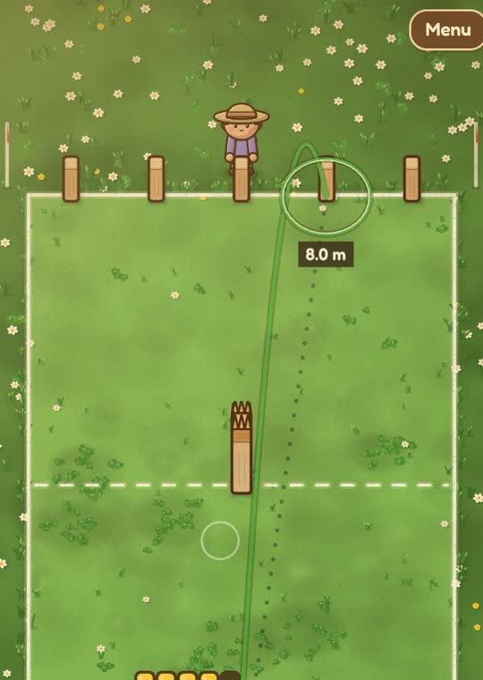
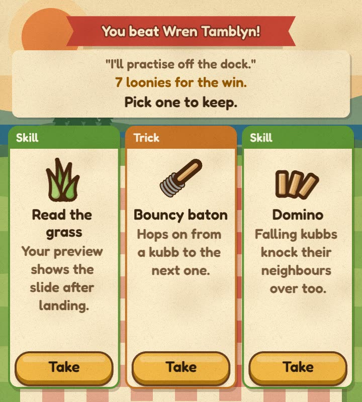
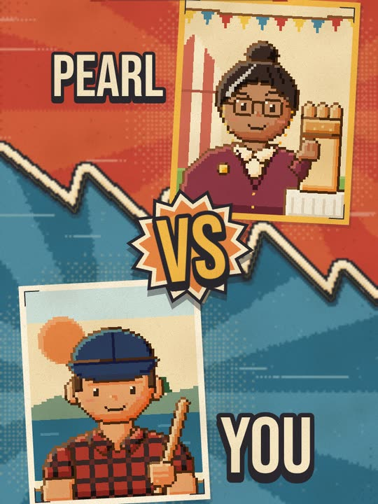
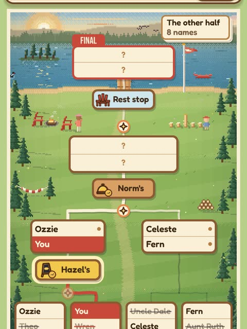
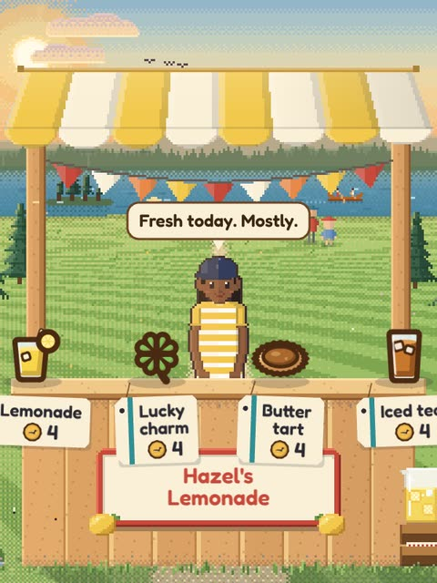
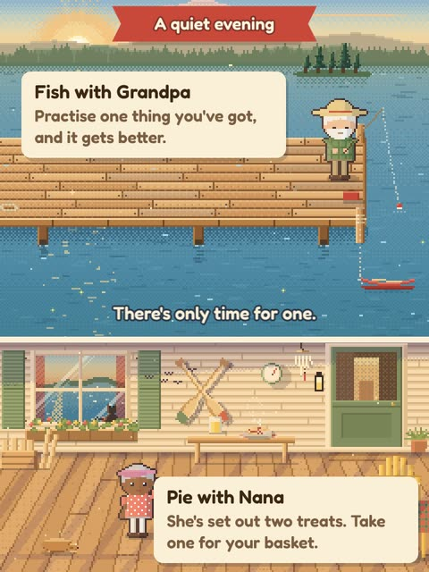
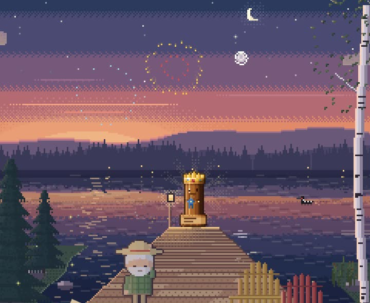

1 2How Kubb works
- 1Knock down their blocks. They're called kubbs.
- 2Then knock down the king.
- !Hit the king early and you lose.
Every throw: hold, and let go when your circle is at its smallest.
Powers at work
You and your rival both bring a few. Here are four.
Win a match, pick one of three
A new power, or an upgrade. Every weekend, a different set.

One weekend, three tournaments
- FridayThe family, on the cottage lawn.
- SaturdayThe lake's best at Norm's marina, in the wind.
- SundayThe County fair, and Pearl Lachance in the final.

Twelve matches to win it all. Lose one and the weekend's over. On Chill, Nana sends you back out once a day.
Between matches



Bring the Old King home

He's the County trophy. Pearl has won the County five years running, so she has him. Win it, and your name is burned into his base.
Play free